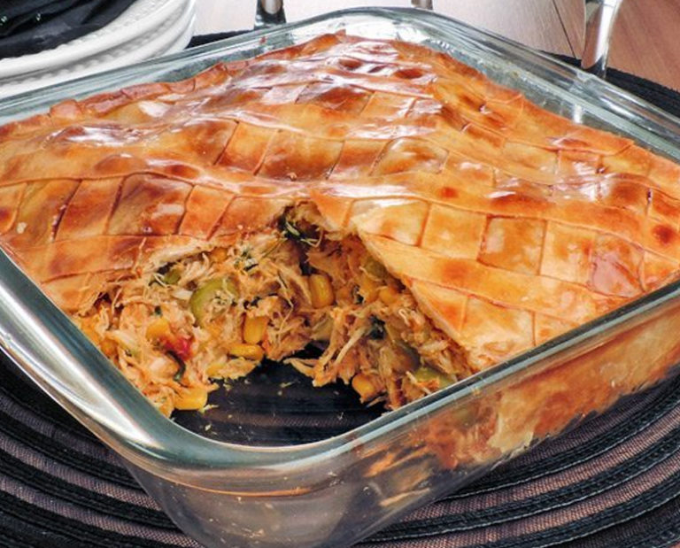

Torta de Frango

Ingredientes
- 2 xícaras de farinha de trigo
- 1 xícara de leite
- 1/2 xícara de óleo
- 3 ovos
- 1 colher de sopa de fermento em pó
- 1 peito de frango cozido e desfiado
- 1/2 xícara de milho
- 1/2 xícara de ervilha
- Sal e temperos a gosto
Modo de Preparo
- Preaqueça o forno a 180°C.
- No liquidificador, bata a farinha, o leite, o óleo, os ovos e o fermento.
- Em uma forma untada, despeje metade da massa.
- Coloque o recheio de frango desfiado, milho, ervilha e temperos.
- Cubra com o restante da massa e asse por 40 minutos ou até dourar.